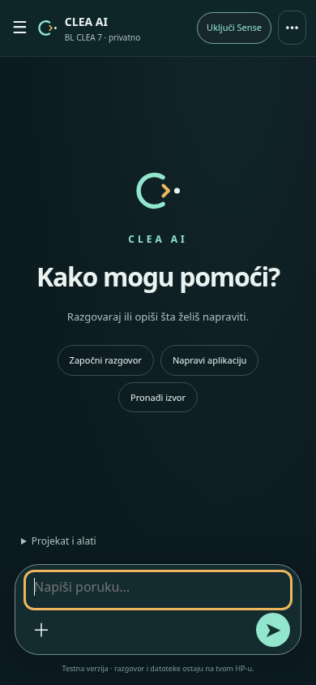

Jedan asistent.
Historija, odgovori uživo, tekstualni prilozi, izvori i zasebno označeni modeli i alati.
Razgovaraj na bosanskom, odaberi projekat i prati stvarni rad na datotekama, izvorima i testovima. Telefon se privatno uparuje s tvojim lokalnim serverom.
Preuzmi BL CLEA AI za Android ↓
Historija, odgovori uživo, tekstualni prilozi, izvori i zasebno označeni modeli i alati.
Opiši aplikaciju ili odaberi projekat. Draw/BIL alati stvaraju provjerljiv izvor, a rezultat dobija karticu za otvaranje i preuzimanje. Posao ostaje na HP-u i kad zatvoriš telefon.
Imenovane kontrole, vidljive upute, vođenje prema izmjerenom položaju i lokalni govor kada ga uređaj podržava.
Već povezan telefon: instaliraj ovu verziju preko postojeće aplikacije i otvori je. Uparivanje ostaje sačuvano. Nemoj brisati podatke aplikacije.
HP mora biti uključen, a telefon imati mrežni pristup HP-u, kroz istu mrežu ili već podešen privatni VPN. APK je klijent; veliki jezički model se izvršava na HP-u. Ne koristi plaćeni inference API.
Proizvod CLEA7500 povezuje vlastitu CLEA logiku, BIL, Studio/Draw, znanje i alate s postojećim zasebno licenciranim lokalnim Qwen modelom. Ovo preuzimanje ne sadrži Qwen težine, privatne dokumente ili pristupne ključeve.
Testna verzija. Izgradnja APK-a i njegov potpis su provjereni; instalacija i rad na fizičkom telefonu još zahtijevaju provjeru. AI može pogriješiti. Nije potvrđena jednakost modelu70B.
SHA256
497076228de37a9069f2e9d952944cd843fad0ab500750a1329e18df46961c83